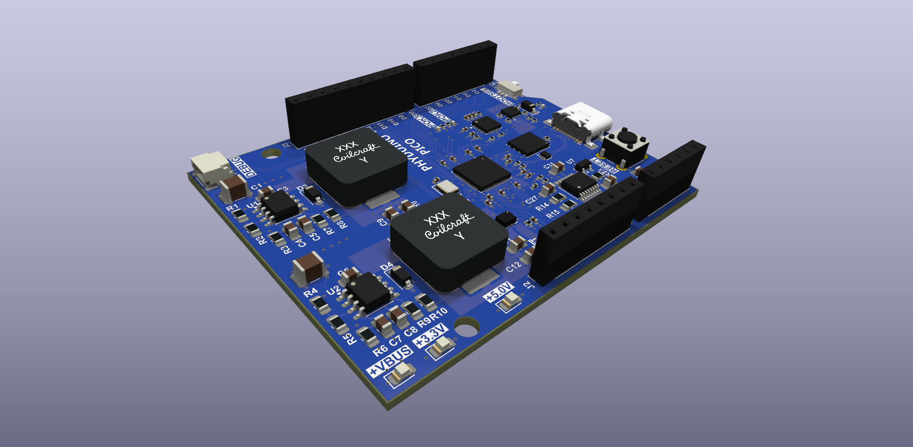

Introduction to Electronics - MicroPython library

A one-file MicroPython library for the Phyduino Pico, built into the Phyduino Pico firmware. It adds what MicroPython doesn't know about this board: the pin names printed on the board ("D7", "A3"), the on-board LED, A3–A5 on the on-board MAX11635 ADC, the USB-C supply voltage and USB-PD power.
Tutorials
| Installing MicroPython mpremote | Set up the MicroPython command-line tool on Windows, macOS or Linux | Open |
| Setting up the Phyduino Pico | Load the Phyduino Pico firmware and check that it is working | Open |
| Setting up PyCharm | Install PyCharm and the MicroPython Tools plugin, then run your first script on the board | Open |
Documentation
| API reference | Every function, class and constant in phyduino.py and arduino.py (Doxygen) | Open |
| Examples: arduino.py | The example scripts using the Arduino-style functions (setup() and loop()), with their source, wiring and output | Open |
| Examples: phyduino.py | The same example scripts using phyduino.py as plain MicroPython, with their source, wiring and output | Open |